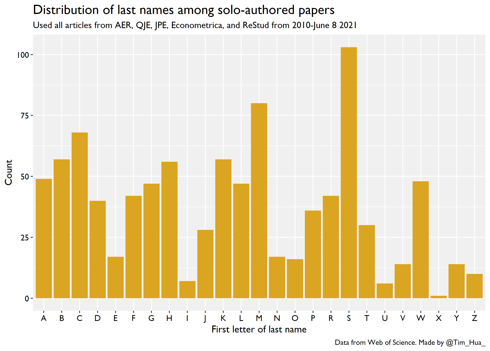
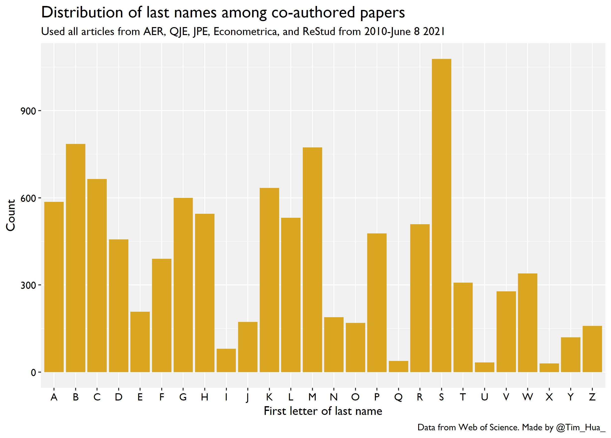

| Home | Research | Interesting Reads | Old Books | Random |
|---|
If you want to see a solo-authored writing sample, I am reasonably proud of my final paper on voting theory in the class the Great Theorems of Economics (Ec 1080 at Harvard) I also did a presentation on the subject and the slides can be found here. I have updated the slides and paper after submitting them for the class as I learn about new relavent information and fix errors.
Hua, Tian., Kim, Chris Chankyo, Zhang, Zihan., & Lyford, Alex. 2020. "COVID-19 Tweets of Governors and Health Experts: Deaths, Masks, and the Economy" Journal of Student Research 10 (1). https://doi.org/10.47611/jsr.v10i1.1171 PDF Dataset Twitter Thread Powerpoint Slide for spring Symposium
These project descriptions are written pretty casually (since the research itself is pretty casual).
Do Last Names Affect Solo-authoriship Rates in Economics?
When I heard from my professor that econ papers almost always list authors based on the alphabetical order of their last name, I thought that those with last names that start later in the alphabet might
decide to solo-author more, so that they won't always be lost in the et al's.
I pulled data from Web of Science for every article published in the top five in the past ten years (n = 4680) and looked at the distribution of last names for
co and solo-authored papers. Turns out the difference in the mean last name (A = 1, B = 2, etc.) of authors involved in solo-authored v. coauthored is not that big: 11.57337 for solo authors and
11.36265 for co-authored. These numbers are calculated when I pooled all of the last names in all solo/co-authored papers together, and since this is a census of papers there are no confidence intervals to add. Here are the histograms for those last name pools:


The problem is that alphabetical discrimination literature has known this problem for a while... I think this guy might have done something on the topic except their paper/methods is better loll, or this guy or this too, idk. It was a fun R exercise though. I followed Varian's advice that, especially when I still need pratice doing research, to not do a literature review first so I get to get my hands a bit dirty on a topic I find interesting and get some experience.
A new theory of Time for College Students.
Existing models of time allocation focuses on a work-leisure trade-off subject to money and time constraints, where individuals need to consider both money and time when deciding between leisure, work,
and buying/making at home. I feel like this
really doesn't apply to a lot of people (including me). This is especially true given that nowadays, leisure (Disney+, video games, exercise, online chess) has almost no marginal cost (in terms of money).
Also, we know that lots of people find fulfillment in their work or other activities that aren't usually considered leisure such as activism, art, or freelance work.
Thus, in my model, individuals maximize the amount of fulfilling work (like economics research hehe) they get done (I guess you could also call this utility), subject to time and tiredness constraints.
Tiredness here refers to the phenomenon where I get tired after working for a while, and my productivity decreases. To maximize the total amount of work I get done I need to rest. This can be applied to traditional leisure activities as well: I can't go snowboarding all day long because I'll get tired.
So what I have in mind is more akin to the Solow model, where the population allocates money (time) between consumption (producing fulfilling work now) or investment (sleeping so I will be more productive tomorrow).
The key difference here is that there is no clear functional form for resting (whereas capital next period = capital now + investment - depreciation) and that there is an upper limit to how productive someone can get.
I model that using an "efficiency percentage", where the total amount of work someone gets done over time is the integral of their efficiency percentage over the period of time that they are working,
multiplied by their maximal marginal product of time.
However, this is where my thinking sort of ended and I don't know where to go...